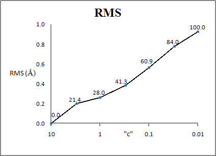
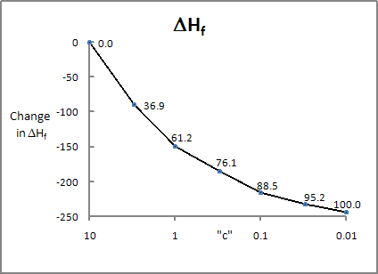

There are two ways to specify "text" :
(A) Specify the file name and location, e.g.:
GEO_REF="CRAMBIN 1CBN X-ray.mop"
GEO_REF="CRAMBIN.arc"
GEO_REF="CRAMBIN.pdb"
GEO_REF="./CRAMBIN.arc"
GEO_REF="../CRAMBIN.arc"
GEO_REF="../../arc files/CRAMBIN.arc"
GEO_REF="sub folder/CRAMBIN.arc"
GEO_REF="./sub
folder/CRAMBIN.arc"
GEO_REF="M:\data sets\CRAMBIN 1CBN X-ray.mop"
GEO_REF="/Users/jstewart/data_sets/CRAMBIN_1CBN_X-ray.mop"
GEO_REF="~/data_sets/CRAMBIN_1CBN_X-ray.mop"
(B) Use GEO_REF="SELF". When "SELF" is present, a file that has the same name as the MOPAC data-set can be used. By default, this data-set would be the data-set in the current job. An alternative would be to use a data-set in a different folder, for example:
GEO_REF="../Reference geometry/SELF"
GEO_REF="../../arc files/SELF"
GEO_REF="C:/PM6 geometries/Self"
If desired, the suffix can be changed, so if the data-set suffix is ".mop" and the file that is to be used as the GEO_REF file has the suffix ".arc", then replace "SELF" with "SELF.arc"
If GEO_REF="SELF" is used, then the GEO_REF geometry used will be the one defined in the MOPAC data-set, even if RESTART is also present. That is, the GEO_REF geometry used will be the geometry before any changes caused by RESTART are applied. This allows large systems to be restarted easily.
GEO_REF can be used for comparing geometries, improving X-ray geometries and also for locating transition states (using LOCATE-TS or SADDLE). In all cases, the job uses two geometries, one from the data set or defined using GEO_DAT, and one from a second data set defined by the keyword GEO_REF. By default, the GEO_REF system will be rotated and translated to minimize the difference between it and the GEO_DAT geometry. This operation will not be carried out if keyword NOREOR is present. This allows a strict comparison of closely-related systems in which some atoms are frozen.
If the file containing the geometry also contains keywords, job name, etc. these will be ignored. Only the keywords, job name, etc., in the MOPAC data set, i.e., the file containing GEO_REF=<text>, will be used. Some keywords, such as CVB, may also require GEO-OK.
Both systems will be converted to simple Cartesian coordinates. Any dummy atoms supplied in either the first system or the system defined by GEO_REF will be ignored, as will any translation vectors.
MOPAC data sets must contain PDB information. Before any calculation is started, the two data sets are examined and compared. For both PDB files and for MOPAC data sets, the examination consists of checking that every atom has a unique label. If any of the following strict requirements is not met, an error message printed and the job will be stopped:
It is normal for this test to fail the first time it is run. Use the error message to identify the fault, then correct the fault and re-run the job. When no errors are reported, the data set labels are acceptable.
The following flexibilities are allowed:
From a practical point of view, this flexibility means that the order of atoms in the two data sets is not important.
The reference data set will then be rotated and translated to give the best overlap with the job data set. This new geometry will be printed as <filename>.new Total geometric differences between the two structures will be printed in the output.
If the keywords GEO_REF, 0SCF and HTML are all present, or if COMPARE is present, then an HTML web-page will be written that allows pairs of structures to be compared.
If there are some atoms in one data-set that are not in the other, or vice versa, then the job will be stopped. However, if GEO-OK is present then the job will continue, but using only the atoms that are common to both data-sets.
The accuracy of native structures, X-ray and NMR, can be increased by performing a limited geometry optimization, starting with the conditioned native structure.
The optimized geometry is a hybrid of the PM7 geometry, assuming that PM7 is used, and the native geometry. The hybrid heat of formation, H', is given as:
H' =ΔHf(PM7) + cΣ(Xi - Xi(0))2
That is, at each geometry, a restraining potential is added to the PM7 heat of formation. To specify a restraint, put the new value after the reference data set, e.g., if a value of 10 is wanted, use: GEO_REF="M:\data_sets\CRAMBIN_1CBN_X-ray.mop"10 or GEO_REF="CRAMBIN_1CBN_X-ray.mop"10.
The effect of the restraining potential is to reduce PM7 errors in the secondary, tertiary, and quaternary structures. It has very little effect on the primary structure, e.g., bond lengths and angles.
The effect of the restraining potential can be illustrated using Crambin,
1CBN. In the original structure there was an extra C2O moiety, this was
removed. 1CBN has both structural and positional disorder; the sequence
used was:
TTCCPSIVARSNFNVCRLPGTPEALCATYTGCIIIPGATCPGDYAN This sequence
differs from the later default sequence of TTCCPSIVARSNFNVCRLPGTSEALCATYTGCIIIPGATCPGDYAN
(difference in bold) The formula used was C202H315N55O64S6,
i.e. 642 atoms. Because the positions of the hydrogen atoms were severely
incorrect in the X-ray structure, before starting any comparison of the effect
of GEO_REF on the geometry, their positions were optimized.
During geometry optimization, the COSMO solvation model was used because some
residues in Crambin were reported as being ionized.
The difference in heat of formation of Crambin, after preconditioning (that is, after the positions of the hydrogen atoms were optimized), and after complete geometry optimization, is ~250 kcal mol-1. The RMS change in geometry is about 1.0 Ångstroms. If the geometry is optimized using GEO_REF and a constant, c, of 1.0, then the heat of formation drops by ~150 kcal mol-1, and the RMS geometry change is ~0.25 Ångstroms. In other words, by allowing the X-ray geometry to change by 0.25 Ångstroms, over half of the strain energy in the X-ray structure is removed. Put yet another way, the resulting geometry is more than twice as accurate, in terms of chemistry, than the X-ray structure. All Crambin structures used here.
GEO_REF can also be used for moving a reactant or product geometry in the direction of the transition state. Consider two data sets, reactant.mop and product.mop in folder M:\, in which the heat of formation of the optimized product geometry is lower than that of the optimized reactant geometry. The product geometry geometry can be moved in the direction of the transition state by using keyword GEO_REF="M:\reactant.mop" The .arc file can then be edited to give a new data set, product_on_slope.mop. The reactant geometry can then be moved in the direction of this new geometry by using keyword GEO_REF="M:\product_on_slope.mop" Again, edit the .arc file to give reactant_on_slope.mop. Why was the product moved first? Because by moving it towards the reactant geometry, its heat of formation would rise in proportion to the distance to the reactant geometry. When the reactant geometry is moved towards the product geometry on the slope, the distance from the starting reactant geometry to the product geometry on the slope is less, so the rise in energy would be less.
If keyword TS is present in a GEO_REF calculation, the optimization is not run. Instead, the two geometries are averaged, and the result written to a new file <file>.new.
For the current exercise, a good approximation to the transition state can then be generated from the data set reactant_on_slope.mop by using keywords TS and GEO_REF="M:\product_on_slope.mop"
If the only faults detected are those that involve hydrogen atoms, then add keyword GEO-OK, and do not have NOSWAP, and re-run. The hydrogen atoms will be put in their correct place automatically. Alternatively, edit either the data-set or the GEO_REF file to remove the fault.